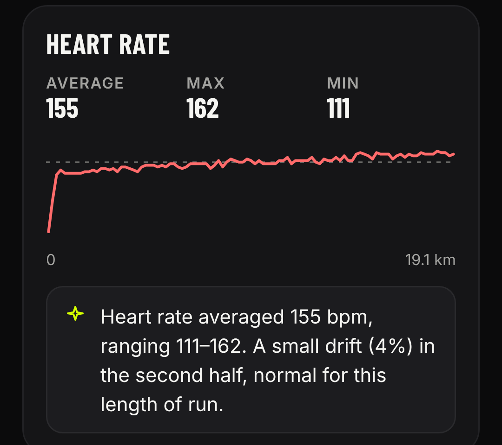

Same pace
every km.
So why did it
feel harder?
Pace: 6:30
every km.
Heart rate:
145 → 161.
Sample run
The app tells you
what it means.

A little drift is normal on long runs.
A lot can mean heat, too little water
or tired legs.
Sample run
PERFORMANCEAPP.RUN
Know your run.
Know yourself.
Every run explained, in plain words.
Free to start · Link in bio